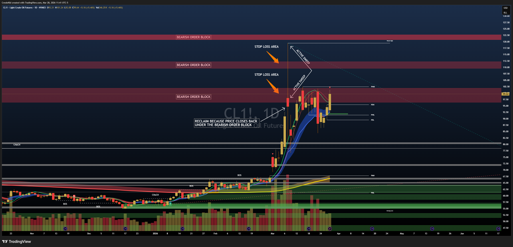
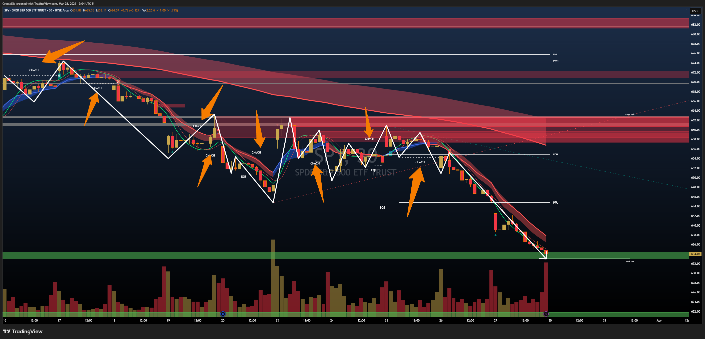
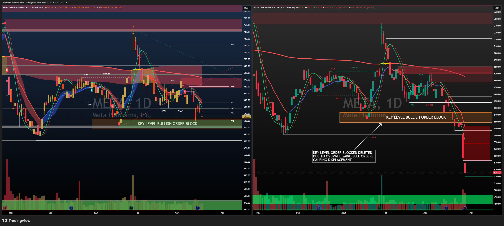
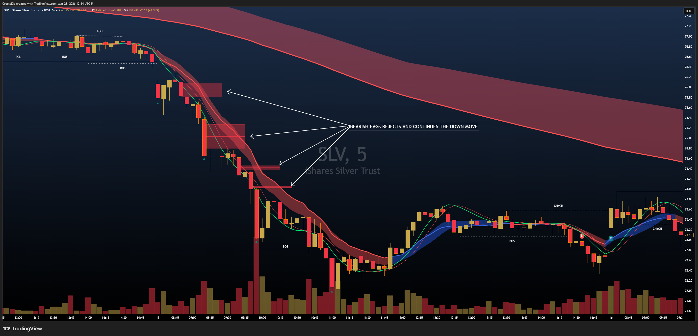

The Trigger System
The T in STACK: "Wait for a specific price action event. Anticipating a trigger = capital at risk."
What is a Trigger?
A trigger is the specific price action confirmation that tells you the setup is LIVE. Without it, you're guessing.
Structure (S) tells you direction. The Trigger tells you WHEN.
The STACK method builds sequentially:
- Structure (S): The foundation — market structure, order blocks, and key levels.
- Trigger (T): The confirmation — the specific price action event that activates your entry.
- Alignment (A): Do all timeframes agree on direction?
- Confirmation (C): Does Wolf Chart 2.1 confirm the move?
- Keep Discipline (K): Position sizing, invalidation, and sticking to the plan.
Without patience for the trigger, the entire system collapses into guesswork. Most retail traders enter on anticipation. Institutional traders enter on confirmation. The difference is discipline — and capital.
Why Most Beginners Skip the Trigger
You find an order block. You see bearish structure. You're convinced price will reverse down. So you short it.
Price then moves against you. You hold. You lose.
What happened? You anticipated. You didn't wait for a trigger.
Retail traders see structure, see an order block, and enter immediately. That's anticipation, not confirmation. The STACK method demands a trigger BEFORE entry.
Why is this so hard? Because waiting is uncomfortable. You've done the work. You've identified the zone. You can see the reversal coming. Your conviction is high. But conviction is not confirmation. Price confirmation is confirmation.
The trigger forces you to be patient. It forces you to wait for evidence that institutional traders are actually using that zone. It transforms your analysis from opinion into actionable signal.
Beginners skip the trigger because:
- Impatience — they want entry NOW, not later.
- Analysis paralysis — they've done so much work on the setup, they feel they must trade it.
- FOMO — price is moving, and they don't want to miss it.
- Lack of discipline — triggers require waiting. Most traders don't have that discipline.
Common SMC Triggers
1. Liquidity Sweep + Reclaim
Price sweeps a key level (takes the liquidity — the stop losses of retail traders), then immediately reclaims back inside the range. The sweep was the trap. The reclaim is the trigger.

- Price approaches your order block.
- It pushes below (or above, if bullish) the level slightly — hitting stops.
- Within the same or next candle, price reverses sharply back inside your zone.
- This reclaim IS your trigger. It shows institutional strength.
A sweep + reclaim is powerful because it tells you: stops have been taken, retail traders have been shaken out, and smart money is now in control of price direction.
2. Change of Character (CHoCH) on the Lower Timeframe
Price reaches your zone (order block), then prints a Change of Character on a lower timeframe. That shift in internal structure IS your trigger.

- You identify a demand zone on the 4H.
- Price enters that zone on the 4H.
- Switch to the 15M. You see price printing lower lows — bearish structure.
- Then price prints a higher low (CHoCH). The internal structure flips bullish.
- That CHoCH on the 15M, within your 4H demand zone, is your trigger to go long.
This works because lower timeframes reveal the real-time shift in buyer/seller control. The CHoCH is the evidence of that shift.
3. Displacement from a Key Level
Price hits your order block or demand zone and reacts with strong displacement — big candles, minimal wicks. The displacement confirms institutional presence.

- Price reaches your supply zone (order block).
- Instead of wiggling around, price explodes lower with 3, 4, 5 big bearish candles.
- Wicks are minimal — no one is catching it on the way down.
- This strong displacement is your trigger. It shows sellers are in control.
Displacement = aggression. When institutional traders are in control, they don't need multiple candles to confirm. They move fast. Displacement shows that speed.
4. Fair Value Gap Fill + Rejection
Price fills into an FVG then shows rejection — wicks, engulfing candles. The FVG acts as the magnet, the rejection is the trigger.

- An FVG (Fair Value Gap) was formed when price gapped up or down.
- Price returns to fill that gap.
- At the FVG level, price prints a long wick or engulfing candle.
- This rejection at the FVG is your trigger. It shows price won't stay there.
FVGs are magnets. Price is drawn to them. But when price reaches an FVG and gets rejected, it's a confirmed trigger that the gap will not fully fill — at least not yet.
What is NOT a Trigger
Before we continue, let's be clear about what does not count as a trigger:
- Price reaching an order block: That's just price reaching price. It's not confirmation of anything.
- A "feeling" that price will reverse: Your conviction is not a trigger. Your analysis is not a trigger.
- A random indicator crossing: RSI oversold, MACD divergence, moving average touch — none of these are institutional price action.
- A 4H candle close inside a zone: That's entry on proximity, not confirmation.
- Price simply pausing at a level: A pause is not a trigger. A pause is indecision.
The trigger must be a visible, specific, repeatable price action event. If you can't describe it to someone else and have them identify it the same way, it's not a trigger — it's a guess.
Trigger Quality
Not all triggers are equal. Some are stronger than others.
A strong trigger has:
- Displacement: Price reacts with force, not hesitation.
- Higher-timeframe alignment: Your trigger aligns with 4H or Daily structure, not just the 15M.
- Unmitigated levels: Price returns to an order block that hasn't been hit before (on this timeframe). These are more powerful than re-tests.
- Confluence: Your trigger happens at the overlap of two zones, or at both a liquidity level AND an order block.
- Clean price action: The candles are clear — no ambiguity about what just happened.
This is where the Roux Score starts to build. The more of these factors you have, the higher your win rate and the bigger your edge.
A trigger with displacement at an unmitigated order block that aligns with higher-timeframe structure is a high-probability trigger. A trigger that's just a lower-timeframe CHoCH at a mitigated level is weaker. Both are valid. But one has higher quality.
Triggers and the STACK
S gives you direction. T gives you timing. Without both, you have nothing.
You can have the best setup in the world. But if you enter before the trigger, you're fighting price on the way to your entry. You're paying the spread twice. You're giving the market a chance to reverse before you've even confirmed your bias.
You can have a great trigger at a weak setup. That's not ideal, but it's tradeable if the trigger is clean enough.
The entire STACK method falls apart without patience for the trigger. This is what separates traders who make money consistently from traders who blow accounts.
Institutional traders have infinite capital and infinite patience. They can wait for the perfect setup with the perfect trigger. Retail traders have limited capital and limited patience. So we have to be even more selective. We have to wait harder. We have to say no to trades that don't have a clear trigger.
Key Takeaways
- A trigger is not price reaching a zone. A trigger is what price DOES when it reaches a zone. Liquidity sweeps, CHoCHs, displacement, and FVG rejections are price action events that confirm institutional control.
- No trigger, no trade. Anticipation is not confirmation. Waiting for a trigger is the difference between retail guessing and professional trading.
- Common triggers include liquidity sweeps + reclaims, lower-timeframe CHoCHs, displacement candles, and FVG rejections. Each has different structures, but they all answer the same question: "Is price confirming my bias?"
- Trigger quality matters. A trigger with displacement at an unmitigated level aligned with higher-timeframe structure is much stronger than a weak trigger at a previously mitigated zone.
- Patience for the trigger is what separates consistent traders from account-blowers. The trigger forces discipline. It transforms analysis into actionable signal.
Practice Exercise: Spot the Trigger
Go back to the order blocks you found in Module 3. For each order block you identified, ask yourself:
- Did price give a trigger when it returned to that zone?
- Look for:
- A lower-timeframe CHoCH
- A liquidity sweep + reclaim
- Displacement (big candles, minimal wicks)
- An FVG rejection
- If there was a trigger, how strong was it? Was it at an unmitigated level? Did it have displacement? Was it aligned with higher-timeframe structure?
- If there was no trigger, the right move was to stand down. That zone was not ready. Maybe it will be next time price visits. Maybe it never will be. But that's not your problem. Your job is to find zones with triggers, not to force trades into zones without them.
This is the discipline of the T in STACK. Once you can consistently spot triggers, your trading will transform.
Check Your Learning
5 questions on Module 4. Click your answer — no second chances per question.
1. What does the T in STACK represent?
2. A displacement from a key level is significant because:
3. An FVG fill and rejection is a valid trigger when:
4. Why is "anticipating a trigger" dangerous?
5. A CHoCH on a lower timeframe serves as a trigger because: